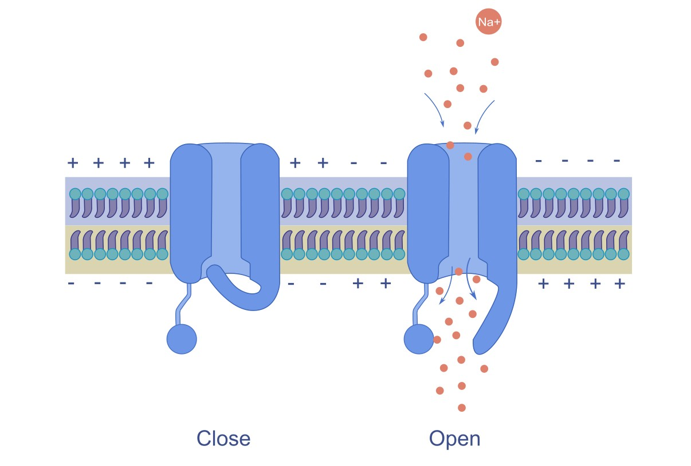

Module 4: The Action Potential and its Propagation#
The action potential is a rapid, temporary change in the electrical potential difference (voltage) of a neuron’s membrane, which is critical for transmitting signals down an axon. It is the fundamental mechanism by which neurons communicate with one another and other cells. Another word used for the action potential is spike. In this module, we will study the phases, mechanisms, and factors influencing the propagation of the action potential. [1]
4.1 Voltage-Gated Ion Channels#
In the previous lessons, we have studied about the passive leak ion channels which are unable to generate rapid changes in the membrane potential of a neuron, therefore neurons require another type of ion channel called Voltage Gated Ion Channels.
Voltage-gated channels are specialized membrane proteins that open or close in response to changes in the membrane potential. Their coordinated opening and closing allow neurons to transmit signals rapidly and effectively throughout the nervous system. The action potential arises from the activity of two primary voltage-gated ion channels: voltage-gated Na⁺ channels and K⁺ channels. These channels open and close at specific moments, generating ion flow, which leads to an action potential.

Note
Voltage Gated Ion Channels open when the neuron’s membrane potential reaches a certain value called threshold potential. [1]
4.2 Action Potential#
An action potential is a brief and rapid change in the membrane potential of a neuron, usually about 100 mV, that travels along the axon in an all-or-none manner.
Features of Action Potential#
It begins with a slow depolarization until the threshold is reached, followed by a rapid rise in membrane potential (depolarization) and then a repolarization phase where the membrane potential returns toward the resting level.
The action potential propagates along the axon without decreasing in size, because it is regenerated at successive points along the membrane.
It is also called a nerve impulse or spike potential.
Duration and Amplitude of Action Potential#
The duration of a single nerve action potential is approximately 1 millisecond (ms). During this time, the membrane potential rapidly changes from about –70 mV (resting potential) to +35 mV, and then returns back to the resting membrane potential.
Latent Period#
The latent period is the short time interval between the application of a stimulus and the beginning of the action potential.
The duration of the latent period depends on the distance between the stimulating and recording electrodes and the type and diameter of the nerve fiber.
Action potentials do not summate, and a specific time interval called the refractory period must pass before another action potential can occur
4.3 Phases of the Action Potential#

The action potential consists of several distinct phases, each characterized by specific changes in membrane potential and ion movement :
Resting Phase#
At the resting phase, the neuron has a resting potential of around -70 mV, and the voltage-gated sodium and potassium channels are closed.
Depolarization Phase (Rising Phase)#
Depolarization occurs due to opening of voltage-gated Na⁺ channels, which causes rapid influx of Na⁺ ions into the neuron.
When a threshold or suprathreshold stimulus is applied, Na⁺ first enters through leak channels and a few voltage-gated Na⁺ channels, causing the membrane potential to change from –70 mV to –55 mV (threshold potential).
At the threshold level (–55 mV), a large number of voltage-gated Na⁺ channels open simultaneously, greatly increasing the membrane permeability to Na⁺.
This leads to a massive influx of Na⁺ ions, producing a rapid and steep depolarization, and the membrane potential rises to about +35 mV.
The rapid opening of many Na⁺ channels is called auto-activation and occurs through a positive feedback mechanism.
During depolarization, the membrane potential approaches but does not reach the Na⁺ equilibrium potential (+60 mV).
Reasons Why Membrane Potential Does Not Reach +60 mV
Na⁺ channels quickly inactivate, stopping further sodium entry (rapid auto deactivation).
Voltage-gated K⁺ channels open, allowing K⁺ ions to leave the cell.
After the membrane potential crosses 0 mV, the inside of the cell becomes positive, which reduces further Na⁺ entry due to electrical repulsion.
During one action potential, approximately 20,000 Na⁺ ions enter the neuron.
Repolarization Phase (Falling Phase)#
Repolarization occurs due to opening of voltage-gated K⁺ channels, which causes efflux of potassium ions (K⁺ ) from the neuron.
K⁺ channels are activated by the same depolarization that opens Na⁺ channels, but they open more slowly.
At the peak of the action potential (around +35 mV), two key events occur:
Voltage-gated Na⁺ channels become inactivated, stopping Na⁺ influx.
Voltage-gated K⁺ channels are fully open.
Membrane permeability to K⁺ increases greatly, leading to rapid K⁺ efflux.
Because K⁺ concentration is higher inside the cell and the inside of the membrane is positive (+35 mV) at the peak, both chemical and electrical gradients favor K⁺ exit.
Therefore, the rapid falling phase of the action potential (repolarization) occurs due to
Decrease in Na⁺ influx
Increase in K⁺ efflux
Repolarization caused by activation of K⁺ channels is a negative feedback mechanism.
As the membrane potential returns toward the resting membrane potential (RMP), the inside of the cell becomes negative again, which reduces further K⁺ efflux.
The slower exit of K⁺ ions produces the after-depolarization phase, making the repolarization curve less steep.
Hyperpolarization Phase (Undershoot) [1]#
The membrane potential temporarily becomes more negative than the resting potential (around -80 mV) due to the prolonged opening of K⁺ channels.
This phase makes the neuron less likely to fire another action potential immediately.
Return to Resting Phase [1]#
K⁺ channels close, and the sodium-potassium pump (Na⁺/K⁺ ATPase) restores the resting membrane potential.
The neuron is ready to fire another action potential when appropriately stimulated.
4.4 Action Potential Propagation#
Action potentials are mainly generated in the axon, not in the dendrites or cell body, because the axon contains a high density of voltage gated ion channels.
The action potential is first initiated in special regions called trigger zones:
Initial segment / axon hillock in motor neurons
First node of Ranvier in sensory neurons
These trigger zones have a very high concentration of voltage-gated Na⁺ and K⁺ channels.
Synaptic potentials generated in the dendrites or cell body are summed and integrated in the cell body.
If the combined potential depolarizes the axon hillock to the threshold level, an action potential is generated.
4.4.1 Propagation of the Action Potential#
Once initiated, the action potential is regenerated along the axon until it reaches the axon terminal. This transmission is called propagation of action potential.
Myelinated fibers conduct impulses faster than unmyelinated fibers.
Larger diameter fibers conduct impulses faster because they have lower cytoplasmic resistance, allowing easier ion flow.
4.4.2 Propagation in Unmyelinated axons#
At the site of action potential generation, Na⁺ influx produces accumulation of positive charges, called a current sink.
These positive charges spread to adjacent resting membrane regions.
The adjacent membrane has a resting potential of –70 mV, so the positive charges reduce its potential toward threshold (–55 mV).
When threshold is reached, voltage-gated Na⁺ channels open, generating a new action potential.
This process repeats sequentially along the axon.
Thus, each segment of membrane depolarizes and generates a new action potential.
The action potential does not physically move along the axon, but induces new action potentials in adjacent membrane areas.
Because voltage gated channels are uniformly distributed, the action potential maintains the same shape and amplitude along the axon.
A circular current flow occurs:
Inside the axon: positive charges move away from the site of action potential
Outside the axon: positive charges move toward the site
This current flow helps restore the resting membrane potential in the previously depolarized region.
4.4.3 Propagation in Myelinated axons (Saltatory Conduction)#
Myelin sheath acts as an electrical insulator, preventing free ion movement across the membrane.
Few voltage-gated Na⁺ channels are present in the myelinated segments. Therefore, action potentials cannot be generated in the myelinated regions.
Positive charges spread along the axon as local currents (graded potentials).
These currents decrease gradually but can travel up to about 3 mm before losing 37% of their strength.
Since internodal distance is 1–2 mm, the current easily reaches the next node of Ranvier.
Nodes of Ranvier contain a high density of voltage-gated Na⁺ channels.
When the node reaches threshold potential, a new action potential is generated.
Thus, the impulse jumps from one node of Ranvier to the next.
This mode of conduction is called saltatory conduction (“saltare” = to jump)
Advantages of myelination
Increases conduction velocity by allowing the action potential to jump between nodes.
Reduces energy expenditure by minimizing ion exchange across the membrane, as fewer ions need to be pumped back to restore resting potential.
Provides insulation, preventing current leakage and ensuring efficient signal transmission.
4.4.4 Factors Affecting Propagation Speed#
1. Myelination#
Myelin Sheath: The presence of a myelin sheath significantly increases the speed of action potential propagation. Myelinated axons can conduct impulses at speeds up to 120 m/s, while unmyelinated axons typically conduct at speeds of 0.5 to 10 m/s.
Nodes of Ranvier: The spacing of the nodes of Ranvier (1–2 mm) allows for efficient saltatory conduction, further enhancing speed.
2. Axon Diameter#
Larger Diameter: Axons with larger diameters have lower internal resistance to the flow of ions, allowing for faster conduction of action potentials. For example, the giant axon of the squid can conduct impulses at speeds up to 25 m/s due to its large diameter.
Smaller Diameter: Axons with smaller diameters have higher internal resistance, which slows down the conduction speed.
4.4.5 Direction of Propagation#
Action potentials propagate in one direction, from the axon hillock toward the axon terminal.
In sensory neurons, action potentials can also propagate from the peripheral sensory endings toward the cell body and then down the axon to the central nervous system. This is called anterograde conduction.
In motor neurons, action potentials can propagate from the cell body toward the axon terminal.
The refractory period (discussed in the next section) ensures that action potentials do not reverse direction and that the signal travels efficiently along the axon.
In some cases, such as in certain types of neurons or under pathological conditions, action potentials can propagate in the reverse direction (antidromic conduction), but this is not the normal mode of signal transmission.
The unidirectional propagation of action potentials is crucial for the proper functioning of neural circuits and the coordination of complex behaviors.
In summary, the action potential is a fundamental electrical signal that allows neurons to communicate rapidly and efficiently. Its generation and propagation depend on the coordinated activity of voltage-gated ion channels, the presence of myelin, and the diameter of the axon, all of which contribute to the speed and directionality of neural signaling.
4.5 Refractory Period#
The refractory period refers to the period of time following an action potential during which a neuron is unable to fire another action potential, or requires a stronger-than-normal stimulus to do so. This period ensures that action potentials propagate in one direction (without reversing course) and that the cell has enough time to reset its membrane potential to its resting state.

Types of Refractory Periods#
1. Absolute Refractory Period: [1]#
Definition: This is the period during and immediately after an action potential when the neuron is completely incapable of firing another action potential, no matter how strong the stimulus is.
Duration: It lasts from the beginning of depolarization to the end of repolarization (until the membrane potential returns to a sufficiently negative value). Cause: During the absolute refractory period, the voltage-gated Na⁺ channels are either open or inactivated, preventing any further depolarization. The inactivation gates of the Na⁺ channels are closed, meaning that no new action potential can be initiated until they reset.
Significance: This period ensures that the action potential travels in only one direction along the axon, as the region that has already undergone depolarization cannot be re-excited immediately. It also prevents the overlapping of action potentials.
2. Relative Refractory Period: [1]#
Definition: This is the period that follows the absolute refractory period, during which the neuron can generate another action potential, but only if the stimulus is stronger than normal.
Duration: The relative refractory period begins after repolarization, typically starting during the later stages of hyperpolarization, and it ends when the membrane potential returns to its resting level.
Cause: During this period, voltage-gated K⁺ channels are still open, causing the membrane potential to be more negative than usual (hyperpolarized). While some of the Na⁺ channels are back to their resting state and capable of reopening, not all of them are reset, so a stronger-than-usual stimulus is needed to overcome this state.
Significance: The relative refractory period allows for the possibility of a new action potential but prevents excessive firing, ensuring that neurons do not fire too frequently.
Important Fact
When myelin is damaged, such as in demyelinating diseases like multiple sclerosis, the previously insulated areas of the axon become exposed. This leads to an increase in the capacitance of the exposed membrane, meaning it can store more charge. Consequently, this allows some of the electrical current to leak out of the axon, reducing the efficiency of signal transmission. As a result, the action potential that reaches these unmyelinated sections of the axon begins to weaken or decay, preventing it from being successfully propagated further along the axon. Essentially, the loss of myelin disrupts the normal flow of the electrical signal, leading to a failure in communication between nerve cells (i.e., action potential stops propagating).
4.6 Additional Info Section#
4.6.1 Tetrodotoxin (TTX) and its Effect on Action Potential#
Tetrodotoxin (TTX) is a potent neurotoxin known for blocking nerve function, leading to paralysis and potentially death. It is found in certain animals, particularly pufferfish (fugu), but also in some other marine organisms, such as certain species of octopus, newts, and frogs.
Mechanism of Action: Tetrodotoxin works by selectively binding to voltage-gated sodium channels in the membranes of nerve cells, blocking sodium ions from entering the cells. This interferes with the action potential, which is critical for nerve signaling.
Blocking Sodium Channels: TTX binds to the outer pores of voltage-gated sodium channels, preventing the influx of sodium ions during depolarization. This blocks the generation of action potentials.
Effect on Nerve Function: The inability to generate action potentials prevents nerves from communicating with each other, leading to paralysis and respiratory failure.
Sources of Tetrodotoxin: Tetrodotoxin is produced by certain bacteria, not directly by the animals that carry it. These animals accumulate TTX through their diet, usually from consuming TTX-producing microorganisms like certain Vibrio species.
Note
Despite its toxicity, many animals that carry TTX are not harmed by it due to adaptations in their sodium channels, which prevent TTX from binding effectively. Tetrodotoxin is extremely potent. As little as 1-2 mg of TTX is enough to kill a human. The mechanism by which it causes death is primarily through respiratory paralysis due to the blocking of nerve transmission.
Medical Research and Uses: Despite its toxicity, TTX has attracted attention in medical research for its potential as a painkiller and as a tool for studying sodium channel function.
Pain Management: Due to its ability to block sodium channels and its potential to inhibit pain pathways without affecting other sensory functions, TTX has been investigated for use in localized pain treatment (e.g., in patients with chronic pain conditions like neuropathic pain or post-surgical pain).
Sodium Channel Research: TTX is a valuable tool in neuroscience and pharmacology for studying the role of sodium channels in nerve function.
Important Fact
Pufferfish is eaten for its subtle flavor and the tingling, numbing sensation that the TTX causes when eaten in small doses. It is considered as a delicacy in some cultures. [2]
4.6.2 Local Anesthetics#
Local anesthetics such as lidocaine and procaine are commonly used during surgical procedures to reduce pain. When these drugs are injected into tissues or sprayed over an affected area, their ionizable hydrophobic molecules easily diffuse through the plasma membrane of nerve cells. They act by blocking voltage-gated sodium (Na⁺ ) channels, which prevents the generation and propagation of action potentials. As a result, the transmission of pain and other sensations is reduced.
4.6.3 K⁺ Channel Blockers#
Certain chemicals such as tetraethylammonium (TEA) and 4-aminopyridine (4-AP) block voltage-gated potassium (K⁺ ) channels. By blocking these channels, the efflux of K⁺ ions is reduced, which delays the repolarization phase of the action potential. These substances are widely used in electrophysiological research, particularly in studies involving voltage clamp techniques to understand ion channel behavior.
4.6.4 Na⁺ – K⁺ ATPase Blockers#
Some drugs, including digitalis and ouabain, inhibit the Na⁺ –K⁺ ATPase pump present in the cell membrane. This pump normally maintains the proper concentration gradient of sodium and potassium ions across the membrane. Blocking the pump disturbs these ionic gradients and can affect the resting membrane potential and normal nerve cell function.
4.7 Summary#
This module explains how neurons generate action potentials, the rapid electrical signals that allow long-distance communication in the nervous system. Action potentials arise from the coordinated opening and closing of voltage-gated sodium (Na⁺) and potassium (K⁺) channels, producing distinct phases including depolarization, repolarization, and hyperpolarization. The module also describes how these signals propagate along axons without losing strength, including continuous conduction in unmyelinated axons and saltatory conduction in myelinated axons, which greatly increases conduction speed. In addition, the absolute and relative refractory periods ensure that signals travel in one direction and regulate the timing of neuronal firing.
While action potentials allow signals to travel along a neuron, communication between neurons occurs at specialized junctions called synapses. In Module 5, we will study how electrical signals arriving at the axon terminal trigger the release of neurotransmitters, enabling neurons to transmit information to other neurons, muscles, or glands.